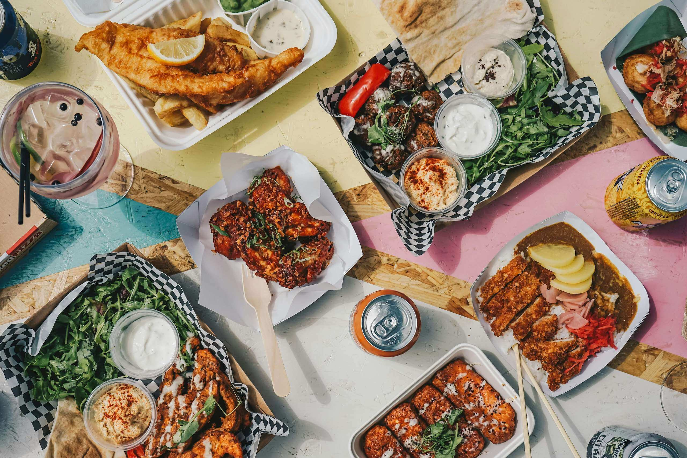

Food Construct
Доставка бизнес-ланчей по Москве
Привезём горячий обед в любую точку города к назначенному времени. Ланч вы собираете сами: суп, главное блюдо, салат, напиток и десерт — в любом из пяти комбо.

Почему выбирают Food Construct
Точно ко времени
Привозим обед к назначенному времени без опозданий.
С 7:00 до 23:00
Доставляем весь день: как можно скорее или к выбранному времени.
Удобная упаковка
Бесплатно упаковываем блюда в надёжные контейнеры.
Пять комбо
Суп, главное блюдо, салат и напиток в разных сочетаниях, десерт — к любому.
Проголодались? Соберите ланч за пару минут
Выберите блюда из меню — стоимость заказа посчитается сразу.
Свяжитесь с нами
Обратная связь
Контакты
- +7-000-000-00-00
- Доставляем по всей Москве
- Ежедневно с 7:00 до 23:00